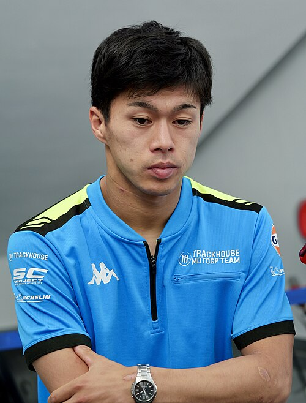

Ai Ogura: risultati e statistiche MotoGP 2026

Foto: Denkmit · CC BY-SA 4.0, via Wikimedia Commons
Ai Ogura corre in MotoGP con il numero 79 per SuperFile Trackhouse MotoGP Team (Aprilia), nazionalità Giappone. Nel Mondiale 2026 è 5° con 259 punti e 1 vittoria.
Ai Ogura è nato il 26 gennaio 2001 a Kiyose, Japan, ha debuttato nel Motomondiale nel 2018.
Risultati Ai Ogura nel 2026
| Gran Premio | Sprint | Gara | Punti |
|---|---|---|---|
| GP Thailandia | 4° | 5° | 17 |
| GP Brasile | 5° | 5° | 16 |
| GP Stati Uniti | 6° | OUTSTND | 4 |
| GP Spagna | 15° | 5° | 11 |
| GP Francia | 7° | 3° | 19 |
| GP Catalogna | 8° | 11° | 2 |
| GP Italia | 8° | 4° | 15 |
| GP Ungheria | 11° | 4° | 13 |
| GP Repubblica Ceca | 2° | 2° | 29 |
| GP Paesi Bassi | 2° | 1° | 34 |
| GP Germania | 4° | 2° | 26 |
| GP Gran Bretagna | 2° | OUTSTND | 9 |
| GP Austria | 4° | 4° | 19 |
| GP Giappone | 5° | 6° | 15 |
| GP Indonesia | 2° | 4° | 22 |
| GP Australia | 13° | – | 0 |